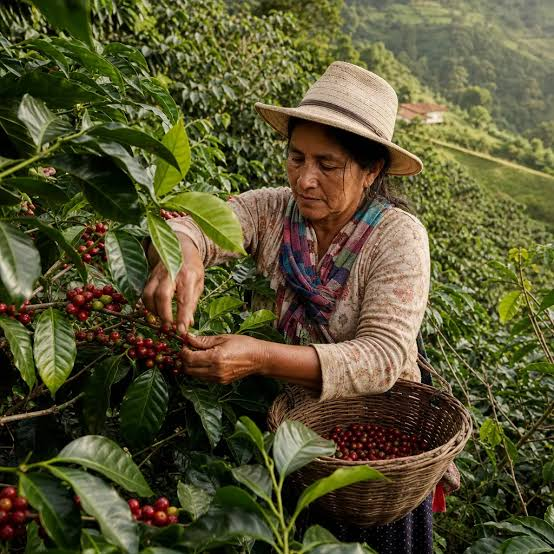

We offer a variety of coffee products for you to enjoy. be sure to check out our selection!

learn about our coffee here
Contact the PlantationAbout Our Coffee
Learn more about the coffee we offer and the process behind it.
- Arabica
- Robusta
- Batian
- Ruiru 11
The Coffee Product Series
- Planting
- Pruning
- Harvesting
- Drying
- Packaging
Daily Plantation Activities
Join us for a day in the life of our coffee plantation.
- pruning
- Discover the art of pruning coffee plants to ensure optimal growth and bean quality.
- harvesting
- Experience the excitement of hand-picking ripe coffee cherries during our harvesting season.
- drying
- Learn about the traditional drying methods that enhance the flavor profile of our beans.